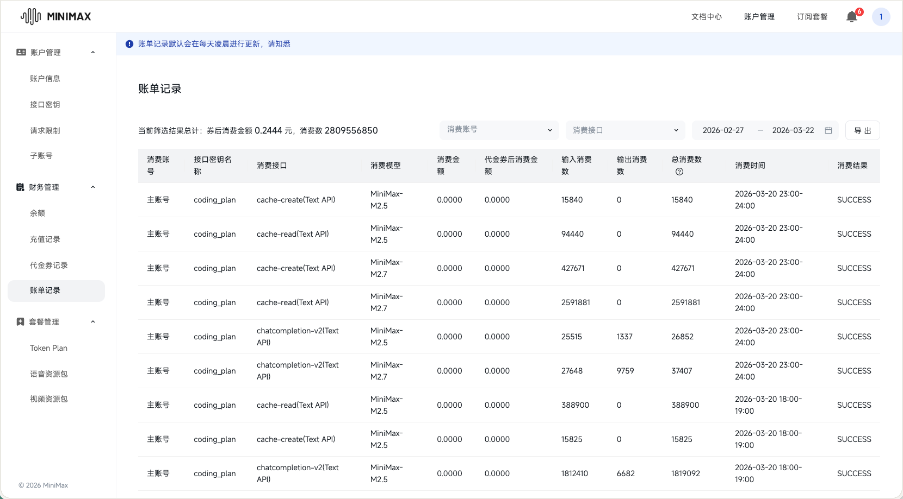

AI 驱动的学术文献阅读与讲义生成系统
报告人：乐绎华 · 中山大学 数学学院 · 2026
将 AI 能力深度融入学术研究全流程，实现文献阅读、笔记整理、讲义生成的高度自动化。
"Vibe" 强调的是流畅的体验 —— 让研究者专注于思考本身，而非工具操作。
25+ 领域特定技能，即插即用，涵盖阅读、写作、研究、开发全流程。
已累计调用 28 亿 MiniMax Tokens，持续迭代验证工作流有效性。
提示词引擎，预先设定写作风格、符号约定、规范规则
跨会话持久记忆，进度追踪，经验教训归档
24 个领域特定技能，即插即用，自动化工作流
重复性工作交给 AI，让研究者专注思考
符号、格式、引用全程规范化
完整的知识演化路径记录
AI 能力核心，工具调用、代码执行、文件系统
PDF → Markdown 高精度转换，保留公式图表
知识管理，双向链接，笔记组织
专业排版，学术讲义生成
领域特定工作流自动化
版本控制，历史备份

持续迭代验证工作流有效性
Claude Code 本地集成
即插即用的领域特定提示词
每个文献库专属子代理
CLAUDE.md + MEMORY.md 持久化
完整会话历史记录
~/.claude/skills/ # 全局 Skills
project/.claude/skills/ # 项目级 Skills/skill-name # 触发 Skill
/skim-jump # PDF 双向联动
/gs-search # Google Scholar
/latex-debug # LaTeX 调试transcript/
├── book.md
├── images/
│ └── page-XX_fig.png
├── content_list.json
└── layout.pdf跨会话持久记忆
{
"project": "因果推断",
"progress": "第3章 / 18章",
"lessons": ["符号混淆问题"],
"conventions": {
"potential_outcome": "Y_i(1)"
}
}期望：\mathbb{E}X
概率：\mathbb{P}(A)
独立性：A \Perp B24 个领域特定技能
latex-notes, skim-jump, reading-progress, interactive-qa, obsidian-cli, literature-notes-template
gs-search, paper-references-generator, literature-reference-manager, citation-bibliography-generator
pdf-figure-extractor, figure-extractor, gemini-image-analyzer, minimax-vision
beamer-chinese-presentation, homework-workflow, chapter0-template, note-content-verifier
frontend-slides, auto-commit-push, latex-label-ref-verifier, latex-debug, gemini-browser-chat, r-expert
Reading & Notes
Stein 风格 motivation 写作
PDF ↔ 笔记双向联动
阅读进度管理
交互式问答归档
Obsidian 命令行
文献笔记模板
| 描述 | 生成 LaTeX 格式学习讲义 |
| 使用场景 | 阅读学术论文时自动生成讲义 |
| 效果 | Stein《傅里叶分析》风格 |
% 用户注解命令
\newcommand{\userannotation}[2]{%
\begin{trivlist}
\item[\textbf{用户注解:}] #1
\textit{#2}
\end{trivlist}
}
% 定义环境禁止使用 itemize！
\begin{Definition}[完全随机实验]
设有 $n$ 个样本，其中 $n_1$ 个被分配到治疗组...
\end{Definition}| 描述 | PDF 与笔记双向联动 |
| 使用场景 | Mac 上用 Skim 阅读 PDF |
| 效果 | Cmd+Shift+点击跳转到笔记 |
# Skim displayline 跳转命令
/Applications/Skim.app/Contents/SharedSupport/displayline \
-r -g [行号] "[PDF路径]" "[TeX源文件]"
# 示例：跳转到第 584 行
/Applications/Skim.app/Contents/SharedSupport/displayline \
-r -g 584 "notes.pdf" "chapters/chapter1.tex"| 描述 | 阅读进度管理 |
| 使用场景 | 追踪多章节书籍阅读位置 |
| 效果 | 进度记录到 JSON |
{
"book": "A First Course in Causal Inference",
"current_position": {
"chapter": 3,
"section": 2,
"page": 45
},
"questions": [
{
"date": "2026-03-22",
"chapter": 3,
"question": "为什么需要引入潜在结果？"
}
]
}| 描述 | 交互式问答 |
| 使用场景 | 阅读中即时提问 |
| 效果 | 回答记录到附录 |
# 每次问答后的自动 Git 提交
git add notes/ .claude/skills/reading-progress/progress.json
git commit -m "QA: 第3章 - 潜在结果定义"
# 或使用脚本
./scripts/commit_notes.sh "更新讲义"| 描述 | Obsidian 命令行 |
| 使用场景 | 批量创建笔记、搜索 |
| 效果 | 笔记 CRUD、属性管理 |
# 创建笔记
obsidian create name="新笔记" content="# Hello"
# 搜索笔记
obsidian search query="因果推断" limit=10
# 追加内容
obsidian append file="笔记名" content="新行内容"
# 管理任务
obsidian tasks daily todo| 描述 | 文献笔记模板 |
| 使用场景 | 开始阅读新文献时 |
| 效果 | 元数据、符号约定 |
notes/<主题>/
├── <主题>-notes.tex # 主文件
├── compile.sh # 编译脚本
├── references.bib # BibTeX
├── chapters/
│ ├── chapter0.tex # 文献概述
│ └── chapter1.tex # 第一章
└── appendix/
└── qa.tex # 问答记录Research & Citation
Google Scholar 搜索
CrossRef API 参考文献提取
文献库批量管理
多格式引用生成
| 描述 | Google Scholar 搜索 |
| 使用场景 | 查找相关论文 |
| 效果 | 标题、作者、期刊、引用数 |
// Google Scholar DOM 抓取
const items = document.querySelectorAll('#gs_res_ccl .gs_r.gs_or');
const results = Array.from(items).map(item => ({
title: item.querySelector('.gs_rt a')?.textContent,
authors: item.querySelector('.gs_a')?.textContent,
citedBy: item.querySelector('.gs_fl a[href*="cites"]')
?.textContent.match(/\d+/)?.[0] || '0'
}));| 描述 | 参考文献提取 |
| 使用场景 | 扫描 transcript 提取 |
| 效果 | CrossRef API → BibTeX |
# 使用方法
python paper_references_generator.py
# CrossRef API 查询
https://api.crossref.org/works?query=<关键词>
# 输出 BibTeX
@article{author2023,
author = {Author, First},
title = {Paper Title},
year = {2023},
doi = {10.xxx/xxx}
} | 描述 | 文献库管理 |
| 使用场景 | 批量管理大量文献 |
| 效果 | 文献库扫描，批量 BibTeX |
# 扫描文献库
/文献引用管理器 bayesian
# 生成引用库
/文献引用管理器 bayesian --generate-bib
# 处理指定文献
/文献引用管理器 PDFs/bayesian/textbook/Book.pdf| 描述 | 多格式引用生成 |
| 使用场景 | 按期刊要求格式化 |
| 效果 | APA/MLA/Chicago/IEEE/Harvard |
from scripts.citation_generator import CitationGenerator
gen = CitationGenerator(style='apa')
citation = gen.cite_book(
authors=["Smith, John", "Doe, Jane"],
title="Research Methods",
year=2020,
publisher="Academic Press"
)
print(citation)
# Output: Smith, J., & Doe, J. (2020). Research methods. Academic Press.Figure Extraction
600 DPI 高清，Gemini Vision
数学插图提取，400 DPI
图表内容提取，公式识别
OCR 识别，表格提取
| 描述 | PDF 图表提取 |
| 使用场景 | 提取论文中的 figure |
| 效果 | 600 DPI，边界框识别 |
# 快速提取 Chapter 2 figures
uv run figure_extractor.py --chapter 2
# 强制重刷
uv run figure_extractor.py --chapter 2 --force
# 仅裁剪模式
uv run figure_extractor.py --chapter 2 --crop-only| 描述 | 数学插图提取 |
| 使用场景 | 提取教材中的图表 |
| 效果 | 400 DPI，断点续传 |
# Gemini 边界框识别
PROMPT = f"""看这张教材原图，找出以下 figures 的精确位置：
Figure: Figure X-Y
Bounding Box: x1=0.XX, y1=0.XX, x2=0.XX, y2=0.XX
规则：
- 坐标以图片整体宽高为基准，0.00 ~ 1.00
- 必须包含完整的图注文字
- 四周留 0.02 边距"""
# 裁剪保存
crop = img.crop((int(W * x1), int(H * y1), int(W * x2), int(H * y2)))
crop.save(f"fig_{figure_id}.png", quality=95)| 描述 | 图像理解 |
| 使用场景 | 理解复杂图表含义 |
| 效果 | 数学公式识别 |
# 分析本地图片
echo "请详细描述这张图片的所有内容" | gemini /path/to/image.png
# 分析网络图片
gemini "https://example.com/image.png"| 描述 | MiniMax 视觉理解 |
| 使用场景 | OCR、表格提取 |
| 效果 | 多语言支持 |
# 命令行分析
python3 ~/.claude/skills/minimax-vision/analyze.py /path/to/image.png
# 自定义问题
python3 ~/.claude/skills/minimax-vision/analyze.py \
/path/to/image.png "这张图片有什么特别之处？"Writing & Templates
Beamer 演示文稿
作业规范化
章节笔记框架
笔记校验
| 描述 | Beamer 演示文稿 |
| 使用场景 | 创建学术报告 |
| 效果 | SYPSTYLE/CambridgeUS 主题 |
\documentclass[]{beamer}
\usetheme{CambridgeUS}
\usepackage{xeCJK}
\setCJKmainfont{Source Han Serif SC}
\begin{document}
\maketitle
\section{Section Name}
\begin{frame}
\begin{block}{Block Title}content\end{block}
\begin{alertblock}{Alert}important\end{alertblock}
\end{frame}
\end{document}| 描述 | 作业工作流 |
| 使用场景 | 规范化提交作业 |
| 效果 | Google Drive 集成 |
> [!exr] Problem 3.1
> **Section 3.2** — *Randomized Block Design*
>
> 完整习题内容...
> [!example] Referenced Background: Section 2.5
> 被引用的背景内容
> [!note] Data Information
> 数据变量说明...| 描述 | 章节模板 |
| 使用场景 | 开始新章节 |
| 效果 | 动机引入，定义/定理格式 |
\chapter*{引言：文献概述}\label{chap:introduction}
\addcontentsline{toc}{chapter}{引言：文献概述}
\section{总述}
介绍学习该主题的背景、意义和研究动机。
\section{文献摘要总结}
\subsection{论文标题}
\begin{enumerate}
\item \textbf{作者:} 作者姓名
\item \textbf{链接:} \url{https://arxiv.org/abs/xxxx}
\item \textbf{核心贡献:}
\end{enumerate}| 描述 | 笔记校验 |
| 使用场景 | 提交前检查 |
| 效果 | 公式一致性，引用完整 |
# 检查 label 定义
grep -nE '\\\\label\{[^}]+\}' notes.tex | grep -v '^(eq:|rem:)'
# 检查 cref 引用
grep -nE '\\\\cref\{[^}]+\}' notes.tex
# 对照原论文验证编号
# Theorem 1.1 → label{def:thm:11}Development & AI
HTML 演示生成
Git 自动提交
Label/Ref 检查
LaTeX 调试
Gemini 数学专家
R 语言专家
| 描述 | HTML 演示 |
| 使用场景 | 快速创建演示 |
| 效果 | 动画丰富，零依赖 |
<!-- 单文件 HTML 演示 -->
<section class="slide" data-slide="1">
<h1>标题</h1>
<p class="reveal">渐入内容</p>
</section>
<style>
.slide { height: 100vh; overflow: hidden; }
.reveal { animation: fadeIn 1s ease-out; }
</style>| 描述 | Git 自动提交 |
| 使用场景 | 保存工作时自动 commit |
| 效果 | 大文件检查，Co-Authored-By |
# 自动提交流程
git status --short
git add -A
git commit -m "更新讲义
Co-Authored-By: Claude Opus 4.6 "
git push origin main | 描述 | LaTeX 引用检查 |
| 使用场景 | 检查 \label 和 \ref |
| 效果 | 发现悬空引用 |
# 提取所有 label 定义
grep -nE '\\\\label\{[^}]+\}' <笔记文件>
# 提取所有 cref 引用
grep -nE '\\\\cref\{[^}]+\}' <笔记文件>
# 对照原论文检查编号一致性| 描述 | LaTeX 调试 |
| 使用场景 | 修复编译错误 |
| 效果 | 标准流程诊断 |
# 编译检测
xelatex -interaction=nonstopmode main.tex
# 常见错误处理：
# - Undefined reference → 检查 label
# - Missing $ → 检查公式
# - Extra } → 检查括号配对
# 每次修复后提交
git add -A && git commit -m "fix: 修复 LaTeX 错误"| 描述 | Gemini Pro 数学专家 |
| 使用场景 | 复杂数学定理证明 |
| 效果 | Playwright 集成，Pro 模式 |
// Playwright MCP 工作流
browser_navigate("https://gemini.google.com")
// 找到输入框
browser_type(element: "question input",
ref: "e350",
text: "Solve: 复杂数学问题",
submit: true)
// 等待响应
browser_wait_for(text: "Gemini said", time: 15)| 描述 | R 语言专家 |
| 使用场景 | 复现教材 R 代码 |
| 效果 | 命令行运行，统计可视化 |
library(dplyr)
library(ggplot2)
# 数据处理
df %>%
filter(age > 28) %>%
select(name, age, salary) %>%
mutate(salary_bonus = salary * 1.1) %>%
ggplot(aes(x = age, y = salary)) +
geom_point() +
geom_smooth(method = "lm")
# 统计检验
t.test(salary ~ group, data = df)Complete Workflow
学术 PDF 文献
AI 深度理解 + 问答
LaTeX 讲义 PDF
Real Cases
Per-Library Specialized Agents
为每个文献库配置专属 Subagent，拥有独立的记忆和提示词
每个 Subagent 维护自己的 MEMORY.md
针对领域的写作风格
几何/统计/代码各有专长
未来发展方向
覆盖更多数学领域
更多 AI 模型集成
深化现有工具链
构建概念关联网络
多用户协作支持
每个文献库专属代理
重复性工作交给 AI
符号格式全程规范
完整知识演化路径
24 Skills 5 大类
| 类别 | 数量 | Skills |
|---|---|---|
| 阅读与笔记 | 6 | latex-notes, skim-jump, reading-progress, interactive-qa, obsidian-cli, literature-notes-template |
| 研究与引用 | 4 | gs-search, paper-references-generator, literature-reference-manager, citation-bibliography-generator |
| 图表提取 | 4 | pdf-figure-extractor, figure-extractor, gemini-image-analyzer, minimax-vision |
| 写作与模板 | 4 | beamer-chinese-presentation, homework-workflow, chapter0-template, note-content-verifier |
| 开发与AI | 6 | frontend-slides, auto-commit-push, latex-label-ref-verifier, latex-debug, gemini-browser-chat, r-expert |
欢迎提出想法和建议！
联系邮箱：yueyh@mail2.sysu.edu.cn
让学术研究更高效
基于 Claude Code 的自动化科研工作流
AI 驱动的学术文献阅读与讲义生成
GitHub: github.com/easygl1der/aca-reader
期待交流
乐绎华 · 中山大学 数学学院
yueyh@mail2.sysu.edu.cn